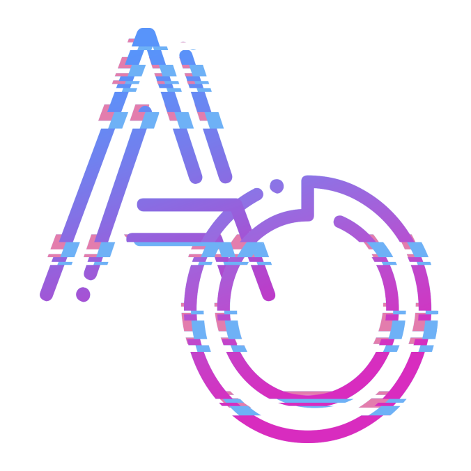
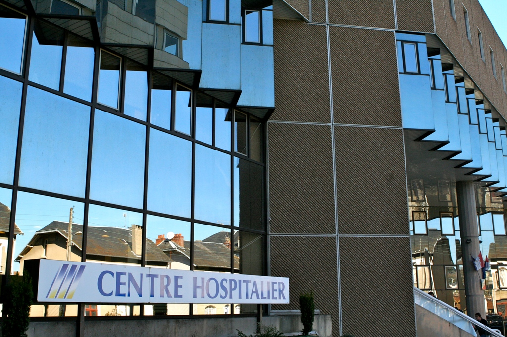
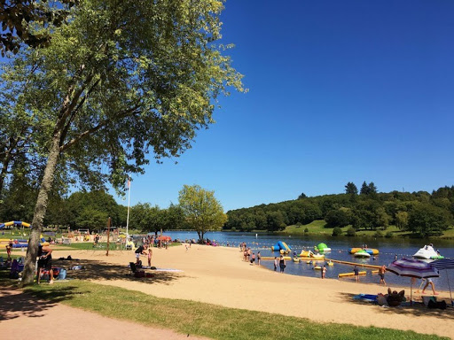

<!DOCTYPE html>
<html lang="fr">

</html>

<head>
    <metacharset="utf-8">
        <link rel="icon" type="image/png" href="media/images/ao2.png" />

        <link href='https://fonts.googleapis.com/css?family=Oswald' rel='stylesheet' type='text/css'>
        <link rel="stylesheet" type="text/css" href="media/css/reset.css" />
        <link rel="stylesheet" type="text/css" href="media/css/style.css" />
        <script src="//cdnjs.cloudflare.com/ajax/libs/sass.js/0.6.3/sass.min.js"></script>
        <link rel="stylesheet"
            href="https://ajax.googleapis.com/ajax/libs/jqueryui/1.12.1/themes/smoothness/jquery-ui.css">
        <script src="https://ajax.googleapis.com/ajax/libs/jquery/3.4.0/jquery.min.js"></script>
        <script src="https://ajax.googleapis.com/ajax/libs/jqueryui/1.12.1/jquery-ui.min.js"></script>
        <script src="media/js/script.js"></script>
        <title>Antoine Ollé - Portfolio</title>
</head>

<body>
    <a href=#one class="fix"></a>
    <div id="one">

        <div class="sign">
            <span class="fast-flicker">Po</span>rtf<span class="flicker">oli</span>o
        </div>
        <div class="container">
            <div class="glitch" data-text="ANTOINE OLLE">ANTOINE OLLE</div>
            <div class="glow">ANTOINE OLLE</div>
            <p class="subtitle">Etudiant en informatique - Développeur Web et Software</p>
        </div>

        <div class="scanlines"></div>

        <div class="all">
            <div class="lefter">
                <div class="text"><a href=#contact>Contact</a></div>
            </div>
            <div class="left">
                <div class="text"><a href=#projets>Mes Projets</a></div>
            </div>
            <div class="center">
                <div class="explainer"><span>Découvrir</span></div>
                <div class="text"><a href=#kisuije>Qui suis-je ?</a></div>
            </div>
            <div class="right">
                <div class="text"><a href=#parcours>Parcours</a></div>
            </div>
            <div class="righter">
                <div class="text"><a href=#competence></a>Mes compétences</div>
            </div>
        </div>

        <!--<a href="https://jouanmarcel.com" target="_blank" class="ref">🔗 Jouan Marcel</a>-->
    </div>
    <div class="divider"><br /></div>

    <div id="kisuije">
        <div class="flex">
            <h1>QUI SUIS-JE ?</h1>
            <div>
                <h2>A PROPOS</h2>
                <p>
                    Etudiant dans le domaine de l'informatique, je m'apprète actuellement à partir étudier la conception
                    de jeux-vidéos à l'Université du Québec dans la ville de Chicoutimi après l'obtention de mon DUT
                    Informatique dans le but de devenir développeur de jeux vidéos
                    Créatif et curieux, j'apprécie tout particulièrelent concevoir des sites, applications et jeux
                    éstéthiques
                    et originaux en utilisant mes connaissances et mon imagination.
                </p>
                <a class="gradient-button gradient-button-1" href="media/pdf/CV2.pdf">Curriculum Vitae</a><br /><br />
                <h2>CENTRES D'INTERETS</h2>
                <ul class="tilesWrap">
                    <li>
                        
                        <h3 class="bleu">PROGRAMMATION ET CONCEPTION</h3>
                        <p>
                            Développement de sites web et d'application. Ecriture de scénario et d'univers fantaisistes
                            dans le cadre de la conception de jeux vidéos.
                        </p>
                    </li>
                    <li>
                        
                        <h3 class="orange">JEUX-VIDEOS</h3>
                        <p>
                            Jeux de stratégie et d'équipe, jeux de cartes, stratégie,
                            réfléxion, concentration et cohésion d'équipe.
                        </p>
                    </li>
                    <li>
                        
                        <h3 class="rose">JEUX DE ROLES</h3>
                        <p>
                            Création et incarnation d'un personnage en tant que joueur. Ecriture de scénarios, création
                            de monde et direction d'un groupe de joueurs en tant que maître du jeu
                        </p>
                    </li>
            </div>
            
        </div>
    </div>

    <div class="divider"><br /></div>

    <div id="parcours">
        <div class="flex">
            <h1>MON PARCOURS</h1>
            <div>
                <h2> PARCOURS SCOLAIRE</h2>
                <div class="carousel-wrapper">
                    <span id="item-1"></span>
                    <span id="item-2"></span>
                    <span id="item-3"></span>
                    <div class="carousel-item item-1">
                        <h3 class="bleu">ENSEIGNEMENT SECONDAIRE</h3>
                        <p>Obtention du baccalauréat scientifique SVT (option Informatique et Science du numérique) avec
                            mention bien
                            <a class="arrow arrow-prev" href="#item-3"></a>
                            <a class="arrow arrow-next" href="#item-2"></a>
                    </div>

                    <div class="carousel-item item-2">
                        <h3 class="orange">ETUDES SUPERIEURES</h3>
                        <p>DUT informaique - en cours de validation</p>
                        <p>Obtention du TOEIC avec un score de 960/990</p>
                        <a class="arrow arrow-prev" href="#item-1"></a>
                        <a class="arrow arrow-next" href="#item-3"></a>
                    </div>

                    <div class="carousel-item item-3">
                        <h3 class="rose">OBJECTIF</h3>
                        <p>Université du Quebec à Chicoutimi - Baccalauréat avec majeure en conception de jeu vidéo</p>
                        <a class="arrow arrow-prev" href="#item-2"></a>
                        <a class="arrow arrow-next" href="#item-1"></a>
                    </div>
                    <br />
                    <br />
                    <br />
                </div>
            </div>
            <div class="pro">
                <h2>PARCOURS PROFESSIONEL</h2>
                <div class="thumbnail">
                    <div class="thumbnail__content">
                        <div class="thumbnail__title">Agent hospitalier</div>
                        <div class="thumbnail__subtitle">Travail à la blanchisserie de Guéret en Hiver 2018 ainsi qu'au
                            printemps 2020 en tant que renfort pour faire face à la
                            crise du COVID-19.</div>
                        <div class="thumbnail__link">En savoir plus</div>
                    </div>
                </div>
                <br />
                <div class="thumbnail">
                    <div class="thumbnail__content">
                        <div class="thumbnail__title">Animateur</div>
                        <div class="thumbnail__subtitle">Animateur des activités terrestre proposé lors de l'évennement
                            estival "un été à Courtilles"</div>
                        <div class="thumbnail__link">En savoir plus</div>
                    </div>
                </div>
            </div>

        </div>

    </div>

    <div class="divider"><br /></div>

    <div id="competence">
        <div class="flex">
            <h1>COMPETENCES</h1>
            <div class="skillcontainer">
                <h2>COMPETENCES INFORMATIQUES</h2>
                <br />
                <div class="bar learning" data-skill="Redux"></div>
                <div class="bar basic" data-skill="C++"></div>
                <div class="bar back intermediate" data-skill="NodeJS"></div>
                <div class="bar back intermediate" data-skill="PHP"></div>
                <div class="bar back intermediate" data-skill="React"></div>
                <div class="bar front advanced" data-skill="CSS3"></div>
                <div class="bar front advanced" data-skill="Java"></div>
                <div class="bar front expert" data-skill="HTML5"></div>
                <div class="bar front expert" data-skill="MySQL/SQL Server"></div>


            </div>
            <div class="skillcontainer">
                <h2>AUTRES COMPETENCES</h2>
                <br />
                <div class="bar basic" data-skill="Méthode Scrum"></div>
                <div class="bar back intermediate" data-skill="Allemand"></div>
                <div class="bar back intermediate" data-skill="Gestion de Projet agile"></div>
                <div class="bar front advanced" data-skill="Pack Office"></div>
                <div class="bar front expert" data-skill="Anglais"></div>
            </div>
        </div>

    </div>

    <div class="divider"><br /></div>

    <div id="projets">
        <div class="flex2">
            <h1>MES PROJETS</h1>
            <div class="list">
                <div class="projet">
                    <a class="c-preview">
                        <div class="projet1"></div>
                    </a>
                    <div class="projetcontent">
                        <h2>Souvenanges</h2>
                        <p>Souvenanges est un projet consistant en la refonte du site internet de l'association
                            caritative Souvenange en suivant une stack bien précise. L'objectif de cette refonte était
                            de rendre le site plus pratique pour les membres et gestionnaires de l'association tout en
                            le rendant plus éstéthique et sécurisé pour les visiteurs</p>
                        <h3>Stack utilisée : </h3>
                        <div class="flex">
                            <div class="flex2">
                                
                                
                                
                            </div>
                            <p>Code source non disponible par choix du client</p>
                        </div>
                    </div>
                </div>

                <div class="projet">
                    <a class="c-preview">
                        <div class="projet2"></div>
                    </a>
                    <div class="projetcontent">
                        <h2>Scrap</h2>
                        <p>Scrap est un jeu réalisé dans le cadre de la Global Game Jam, un évennement mondial durant
                            lequel des groupes de développeurs doivent réaliser un jeu entier en un week-end en suivant
                            un thème spécifique. Dans ce jeu en vue isométrique, le joueur incarne un petit robot qui
                            dois sauver un monde au bord de l'extinction...</p>

                        <h3>Stack utilisée : </h3>
                        <div class="flex">
                            <div class="flex2">
                                
                            </div>
                            <p>Code source displonible <a href="https://globalgamejam.org/2020/games/scrap-2">ici</a>
                            </p>
                        </div>
                    </div>
                </div>

                <div class="projet">
                    <a class="c-preview">
                        <div class="projet3"></div>
                    </a>
                    <div class="projetcontent">
                        <h2>Animétéo</h2>
                        <p>Animétéo est une application mobile réaliser à l'aide de l'APK Android permettant à
                            l'utilisateur d'obtenir des conseils vestimentaires quotidiens en fonction de la météo du
                            jour.
                            Cette application a été réallisé dans le cadre du module d'apprentissage de développement
                            mobile au cours de la seconde année de DUT informatique.
                        </p>

                        <h3>Stack utilisée : </h3>
                        <div class="flex">
                            <div class="flex2">
                                
                                
                            </div>
                            <p>Code source displonible <a
                                    href="https://drive.google.com/file/d/1NDQahCs5yDFAZg8HjjA7ULQGvbZ368d0/view">ici</a>
                            </p>
                        </div>
                    </div>
                </div>

                <div class="projet">
                    <a class="c-preview">
                        <div class="projet4"></div>
                    </a>
                    <div class="projetcontent">
                        <h2>Wroom</h2>
                        <p>Wroom est un projet regroupant des parties backend et frontend d'un site recensant des
                            pilotes, leurs écuries et leurs performance. L'ensemble des données peut être facilement
                            géré dans la partie administrateur. Ce projet a été réalisé dans le cadre de l'apprentissage
                            du langage NodeJs au cours de la seconde année de DUT informatique.
                        </p>

                        <h3>Stack utilisée : </h3>
                        <div class="flex">
                            <div class="flex2">
                                
                            </div>
                            <p>Code source displonible <a
                                    href="https://github.com/A-Olle/Wroom">ici</a>
                            </p>
                        </div>
                    </div>
                </div>
            </div>
        </div>
    </div>

    <div class="divider"><br /></div>

    <div id="contact">
        <div class="flex">
            <h1>ME CONTACTER</h1>
            <div>
                <h2>Retrouvez moi sur :</h2>
                <div class="wrap">
                    <a href="https://twitter.com/OlleAntoine"></a>
                    <a href="https://www.linkedin.com/in/antoine-oll%C3%A9-30a7a51a0/"></a>
                    <a href="https://github.com/A-Olle"></a>
                </div>
            </div>
            <h2 class="mail"> Ou à l'adresse : contact.antoine.olle@gmail.com</h3>
        </div>
    </div>

    <div class="divider">
        <br />
        
    </div>
    <footer>
        <h2>
            Remerciements
        </h2> <p>Nicolas Pattyn, Aurore Famy, Guillaume Brehier</p>
        <p>Portfolio réalisé avec soin - Copyright - Antoine Ollé 2020</p>
    
    </footer>
    
</body>

</html>